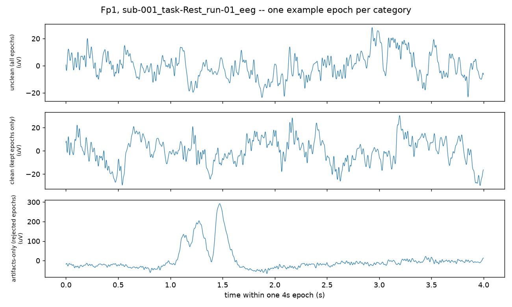

Is a known depression marker partly contamination?
Frontal alpha asymmetry (FAA) is a long-studied EEG depression marker that the
literature calls unreliable without knowing why. We built an endpoint-aware contamination score
— not a classifier, not a cleaner — and used it to test whether part of the answer is muscle
and eye-movement artifact that happens to share alpha's frequency band. Run on three
independent real public datasets, not synthetic data.
01The instrument
Existing MNE-Python detectors already find blinks, muscle noise, line noise, pops,
motion, cardiac contamination. The new part: a penalty that depends on which frequency band
you're about to measure, not a single generic "clean vs. dirty" score.
for artifact in detected_artifacts: penalty += artifact.severity * WEIGHT[type] * spectral_overlap(artifact.band, ENDPOINT_BAND)
A blink's energy sits below 4 Hz — score it against delta and it costs a lot;
score the exact same detected blink against alpha (8–13 Hz) and it costs almost nothing.
Same-recording sanity check — one real recording, split into clean vs.
contaminated epochs by amplitude, scored both ways:

02Three independent public datasets
Two ship real per-subject clinical severity (required for Test B.1), from two
different labs with no overlapping subjects; the third has diagnosis labels only and runs as
a replication check on everything except B.1.
ds003478 (real BDI severity · Univ. of Arizona)
119
recordings
ds007615 (real BDI-II severity · Univ. of Oslo)
49
recordings
Mumtaz/HUSM (replication check · no severity)
58
recordings
03Test A — does cleaning choice decide the answer?
FAA computed under 5 preprocessing pipelines (raw, ICA, generic amplitude rejection,
AutoReject, and ours — the endpoint-conditional score used to weight instead of
reject) × 2 reference schemes, per subject. Red flag: a big swing means processing
decisions, not biology, are steering the result. Bounded to 12 recordings per dataset —
ICA and AutoReject are slow; see caveats.
ds003478 (real BDI severity · Univ. of Arizona)
Median FAA range (12 subjects)
0.344
typical swing across the 10 combos
Max FAA range
1.917
largest single-subject swing
sub-059
0.047
sub-053
0.104
sub-007
0.127
sub-006
0.131
sub-060
0.155
sub-005
0.163
sub-055
0.344
sub-058
0.524
sub-052
0.620
sub-001
0.642
sub-002
1.653
sub-004
1.917
ds007615 (real BDI-II severity · Univ. of Oslo)
Median FAA range (12 subjects)
0.101
typical swing across the 10 combos
Max FAA range
0.673
largest single-subject swing
sub-07
0.049
sub-10
0.054
sub-41
0.056
sub-18
0.080
sub-08
0.091
sub-01
0.098
sub-37
0.101
sub-09
0.121
sub-02
0.123
sub-04
0.130
sub-30
0.317
sub-42
0.673
Mumtaz/HUSM (replication check · no severity)
Median FAA range (12 subjects)
0.207
typical swing across the 10 combos
Max FAA range
0.964
largest single-subject swing
H_S16
0.022
MDD_S15
0.042
MDD_S13
0.056
H_S11
0.076
H_S10
0.128
MDD_S10
0.130
MDD_S11_
0.207
H_S14
0.227
H_S15
0.392
MDD_S17
0.403
MDD_S14
0.725
H_S13
0.964
healthydepressed
04Five independent classifiers, one per pipeline
Not just "how much does FAA move" (Test A) — for each pipeline, an independent
classifier using only that pipeline's own FAA to guess depressed/healthy, none sharing
data with each other. Dashed line = chance (AUC 0.5); green = at/below chance.
ds003478
raw
0.22
ICA
0.22
generic reject
0.42
AutoReject
0.25
ours (endpoint-aware)
0.22
ds007615
raw
0.36
ICA
0.33
generic reject
0.31
AutoReject
0.39
ours (endpoint-aware)
0.36
Mumtaz/HUSM
raw
0.31
ICA
0.31
generic reject
0.39
AutoReject
0.39
ours (endpoint-aware)
0.39
05Test B — is contamination tied to diagnosis?
Three group-level analyses per dataset.
ds003478 (real BDI severity · Univ. of Arizona, n=119)
B.1
quality ~ group + severity
p = 0.755
no red flag
Confound check
FAA ~ group + quality
p = 0.082
no red flag
B.2 — the sharp one
quality alone → group (5-fold CV)
AUC = 0.483
no red flag
ds007615 (real BDI-II severity · Univ. of Oslo, n=49)
B.1
quality ~ group + severity
p = 0.713
no red flag
Confound check
FAA ~ group + quality
p = 0.257
no red flag
B.2 — the sharp one
quality alone → group (5-fold CV)
AUC = 0.374
no red flag
Mumtaz/HUSM (replication check · no severity, n=58)
B.1
quality ~ group + severity
skipped — no severity data
no red flag
Confound check
FAA ~ group + quality
p = 0.998
no red flag
B.2 — the sharp one
quality alone → group (5-fold CV)
AUC = 0.313
no red flag
06The finding
On all three datasets, independently, under the current
placeholder weights, none of the contamination red flags fired: group/severity doesn't predict
contamination (B.1), and contamination alone can't tell healthy from depressed above chance
(B.2). That holds up consistently — no evidence here that this endpoint-aware contamination
score explains the FAA–group relationship.
On top of that, ds007615 — the dataset with the most
statistical power to detect FAA itself — shows a real, significant group effect on FAA
(p = 0.020) that is not explained by quality/contamination
(p = 0.257, no B.2 leakage either). ds003478 and Mumtaz don't reach significance on
that same question, which is inconclusive rather than contradictory — consistent with FAA
effects being small and these being modest sample sizes. Reported here plainly, not tuned
toward drama either way: this is not proof FAA is a reliable marker everywhere, but on the
specific question this project asked — is FAA's group difference actually just
contamination? — the answer across all three datasets is no.
07Caveats — read before citing any of this
The weights are placeholders.WEIGHT[artifact.type] is equal
weighting (1.0 across the board) pending the real physics-derived values. Every number above is
contingent on this.
EMG/alpha overlap is currently zero. The muscle-artifact band (20–45 Hz)
doesn't overlap alpha (8–13 Hz) under the current placeholder band assignment — in tension
with the hypothesis that muscle noise sits at the same frequency as alpha. If real EMG
contamination extends into alpha, the alpha-quality numbers above likely underestimate
contamination there. Needs domain sign-off, not a unilateral widening to make the hypothesis land.
Test A and the 5 classifiers ran on 12 recordings per dataset, bounded by
ICA/AutoReject runtime — suggestive, not a large-N result.
Mumtaz/HUSM has no per-subject severity in its public deposit — Test B.1 ran
on ds003478 and ds007615 (two independent cohorts), not Mumtaz; Mumtaz's contribution is Test A
and B.2/confound-check as a replication.
ds003478 and ds007615 use the same BDI(>13)/BDI(<7) group thresholds
for consistency — chosen to match ds003478's own published groups, not independently re-derived
per dataset.
Small samples, small expected effects. FAA effects are known to be small in
the literature — ds007615's significant group effect is the only one of three datasets to reach
p<0.05 here; a null result on the other two is informative but not proof of absence, and a
significant result on one is not yet a replicated one.
Offline only. This is Phase 1 — entirely offline analysis of already-recorded
public data. A causal/streaming version (deciding using only samples already seen) is a later,
optional stretch, not part of this finding.